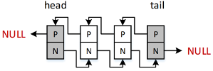
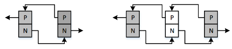
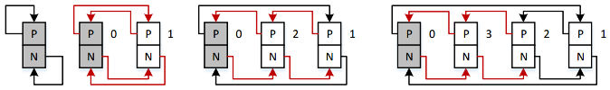
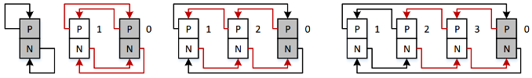

Linked list
Doubly Linked List - An example from CS144
In an online course CS144, Standford provides source code that has a library for hanlding linked list.

Figure. Doubly Linked List
In this library, you can create a list, add a node to the tail/head of list, add a node to a specific node in list.
head and tail node are NULL pointers when list is initialized.
Circular List - Linked list in Linux Kernel
Kernel provides a built-in data structure: linked list. This built-in linked list can be modified to use in user space applications. In this note, we will talk about API in Kernel list.h and how this kind of list grow up. For more information such as list definition, data structure ... please refer kernel data structure.
Basically, list.h is "cirlular linked list".
Add to list
list.h provides a fundamental inline function for adding a new node between prev and next node. That function is __list_add().
static inline void __list_add(struct list_head *new, struct list_head *prev,
struct list_head *next);
The below figure (100*x) illustrates how __list_add works.

__list_add() makes 4 connection changes, these are:
next->prev = new;
new->next = next;
new->prev = prev;
prev->next = new;
Base on __list_add(), list.h also provides two wrapper-function that often be used for adding list element: list_add and list_add_tail. So, what is basic difference between list_add and list_add_tail? The answer appears when looking deeply at the way that APIs use __list_add.
static inline void list_add(struct list_head *new, struct list_head *head)
{
__list_add(new, head, head->next);
}
and
static inline void list_add_tail(struct list_head *new, struct list_head *head)
{
__list_add(new, head->prev, head);
}
list_add
Adding new element right after head: __list_add(new, head, head->next);

*The gray node is head
list_add_tail
Adding new element right before head: __list_add(new, head->prev, head);
